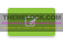
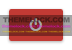
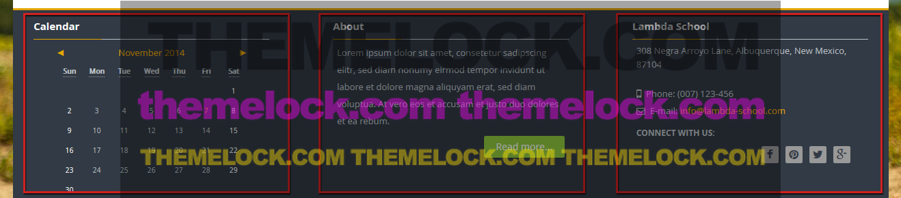
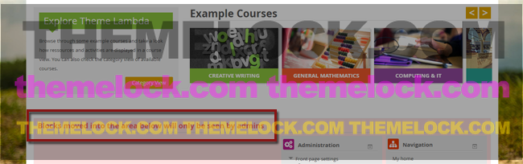

First Steps: Theme UI
Theme Lambda's Profileblock
How to log in and log out
Theme Lambda uses a profileblock in the header for a quick login area. After a successful login, the profileblock displays the user's profile image and name. This serves also as a dropdown menu which includes quicklinks to the user's courses, files, messages and more.
In the dropdown menu you will also find the Log out link.
Turn editing on/off
The theme uses a special button to turn editing on or off. For teachers and course creators, the button is now more easy to recognize.
Turn editing on Turn editing off
Footer block area
The theme's footer consists of three block regions [Footer (Left), Footer (Middle) and Footer (Right)].This means that any Moodle block can be placed there. In the screenshot below the Calendar block is placed at position Footer (Left) and HTML blocks are added to Footer (Middle) and Footer (Right).

Hiding blocks from users on the frontpage
The theme offers you the possibility to move your blocks to a "hidden" position at the frontpage. To do so, turn on the editing by clicking the link in "Administration" > "Course administration" and edit the block settings by clicking on the cogwheel at the top of the block. At "Where this block appears" > "On this page" click in the dropdown for "Region" and select the setting "hidden from users". Then the block will be placed in a hidden area only visible for admins:
